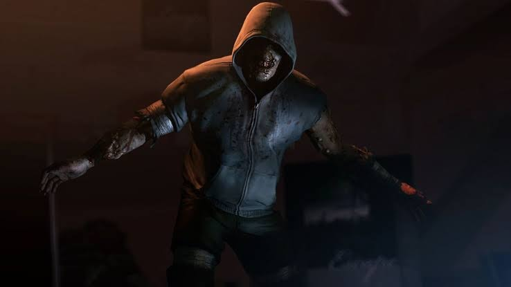
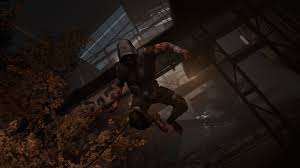

Aspecto
El Hunter parece haber sido un practicante de parkour antes de mutar a causa de la Gripe verde vistiendo una sudadera desteñida con una capucha azul y pantalones de color marrón, sin olvidar la cinta aislante que cubre sus mangas y perneras para reducir la resistencia al viento. La capucha siempre cubre su cara, y si se inspecciona detenidamente, se puede ver que la piel alrededor de sus ojos está gravemente dañada, mientras que sus pupilas tienen un pequeño brillo. Dentro de la secuela su apariencia cambió levemente, rompiendo sus mangas y piernas del pantalón para dejar ver su piel mutada, además de perder sus zapatos.
Habilidades
°Saltar grandes distancias sin lastimarse: El Hunter puede realizar saltos impresionantes desde alturas considerables sin sufrir daños. Su agilidad y fuerza en las piernas le permiten alcanzar lugares inaccesibles para otros infectados.
Saltar e impulsarse por las paredes: El Hunter puede trepar y moverse rápidamente por las superficies verticales, como paredes y edificios. Esto lo hace especialmente peligroso en espacios cerrados.
Caer encima de los sobrevivientes para arañarlos: Su ataque principal es el salto. Cuando se lanza sobre un superviviente, lo aturde y comienza a rasguñarlo en el pecho hasta eliminarlo